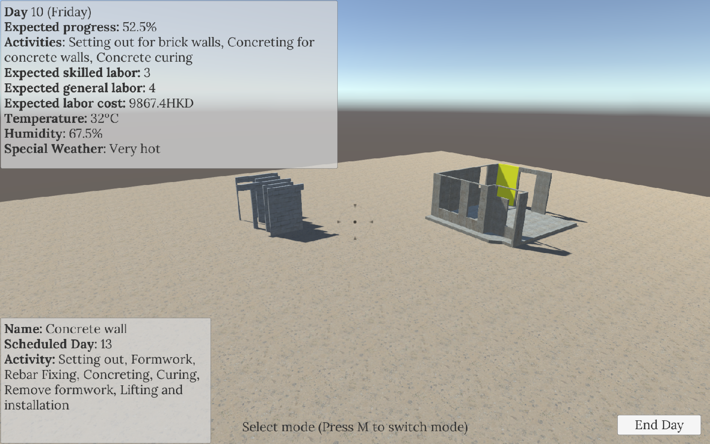
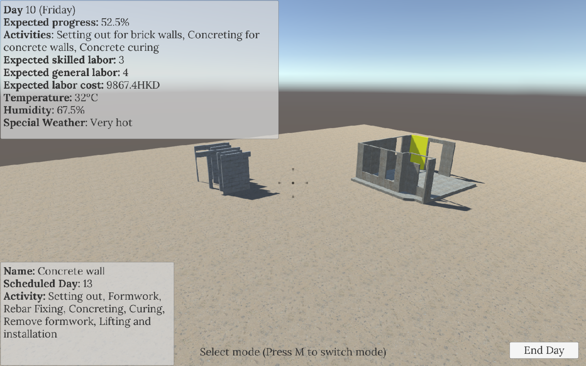

YiCon
General Information
| Project Duration | 9 months |
| Completion Date | November 11 2016 |
| Team Size | 1 (solo project) |
| Genre | Serious game - Construction project simulation |
| Platform | PC |
| Download the game | |
| Manual | |
| Presentation slides |
This game is developed for my final year project – “A Serious Game for Construction Education – Development and Evaluation”.

In this project, I explored the possibility of using serious games to address problems existing in undergraduate-level construction education, and tried to develop a game to achieve this goal. I am quite proud that most play testers said this game did help them understand the construction process and the dynamic nature of project management.
 

In this game, the player plays the role of a project manager, whose goal is to minimize project time and cost of a simulated project through optimizing labor allocation strategies. The User’s Manual was made to assist the conduction of play test and evaluation of the game, and covers all inputs methods and guidelines for playing this game.
I learned a lot from the process of making this game. As this is my final year project, I examined learning theories and design frameworks of serious games before diving to the design and development of this game, so I familiarized myself with the status of serious game research. During the design stage, I referred to a real construction project to make this game more realistic, and I practiced designing games with the DPE framework, which was proposed by Prof. Brian W. in 2007. I also` got a taste of conducting play test sessions during the evaluation of this stage. Although I did not have enough time to modify the game design based on players’ feedback, I realized the importance of sufficient play tests during game development.